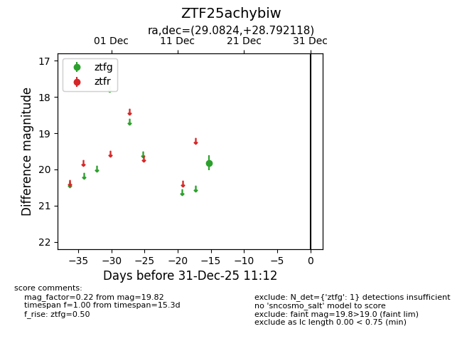
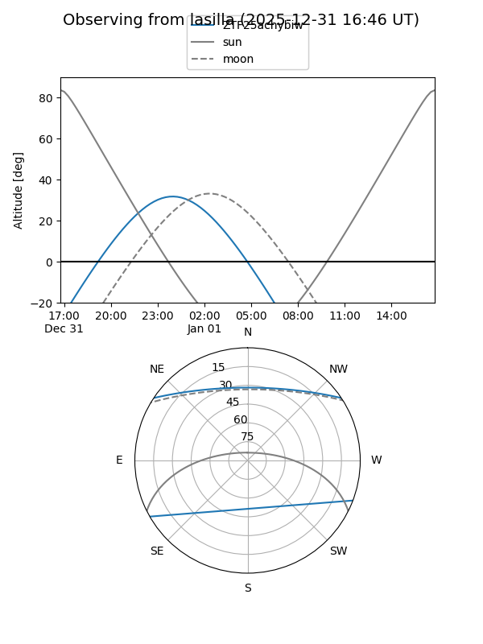
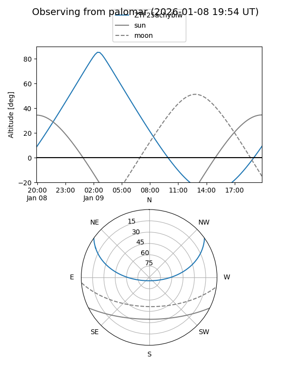

ZTF25achybiw
Target ZTF25achybiw at 2025-12-31 18:00
Aliases and brokers:
FINK: link
Lasair: link
ALeRCE: link
alt names
ZTF25achybiw (ztf,fink_ztf)
Coordinates:
equatorial (ra, dec) = 29.0824,+28.79212
equatorial (HMS+DMS) = 01:56:19.78,+28:47:31.62
galactic (l, b) = (139.7044,-31.95736)
Flags:
Photometry:
last ztfg=19.82
1 ztfg detections
Lightcurve

Visibility


Additional plots